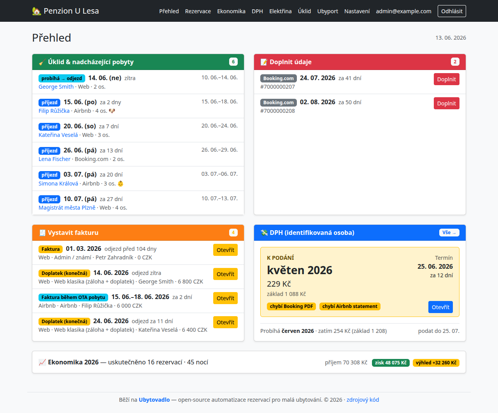
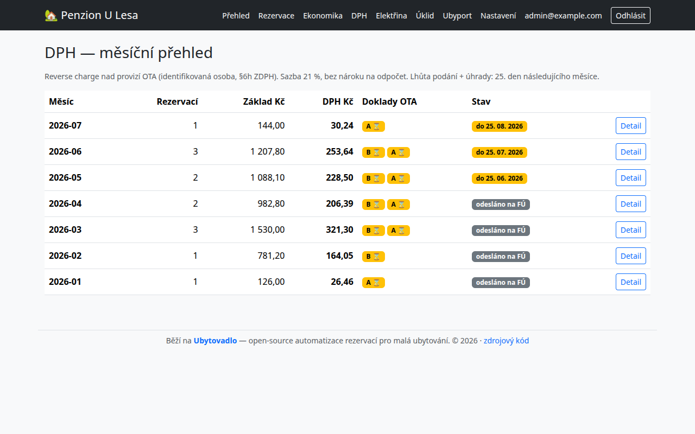
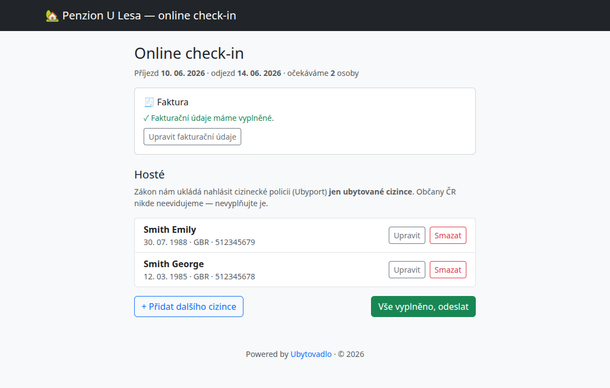
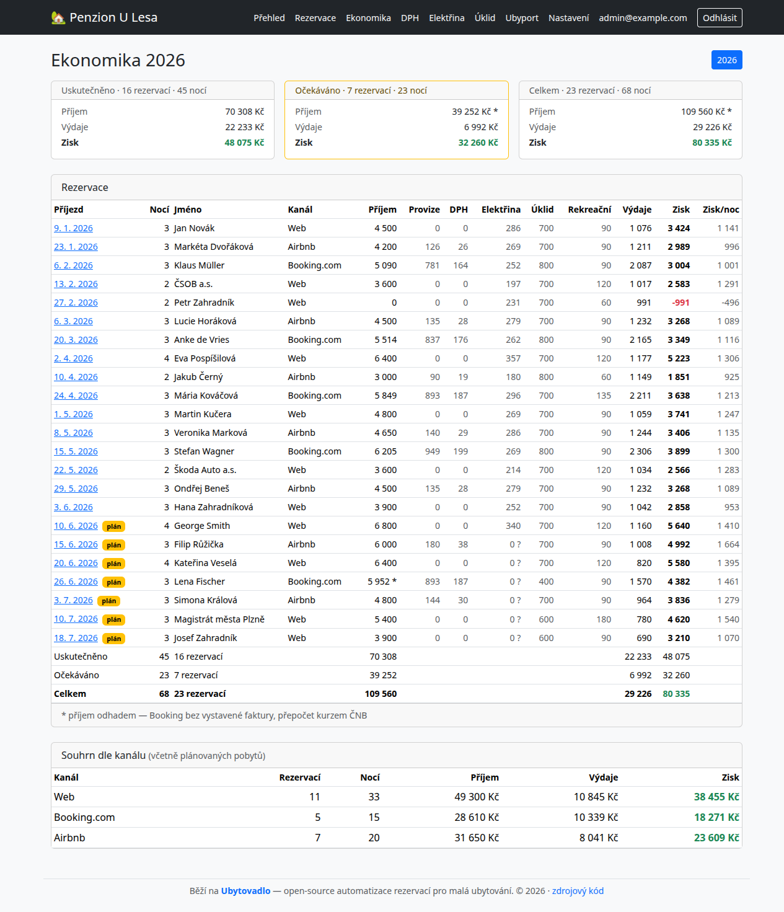
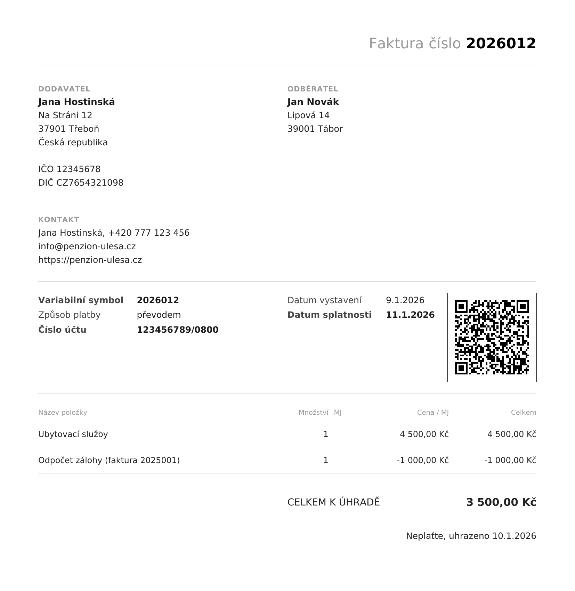

Přehled, který myslí za vás
Dashboard řekne, co opravdu řešit: kdo přijíždí, kde uklidit, komu vystavit fakturu, na jakou lhůtu nezapomenout. Barvy samy upozorní na to, co hoří.
Od ubytovatele pro ubytovatele · open source
Ubytovadlo sleduje rezervace z vlastního webu, Bookingu i Airbnb a samo z nich vystaví fakturu, založí řádek v evidenci a pohlídá hlášení i lhůty. Bez drahých zahraničních předplatných — běží na běžném webhostingu.
Běží na běžném webhostingu · bez měsíčního předplatného · otevřený kód

S manželkou máme na statku ve Lništi u Trhových Svinů Vejminek Malý Statek — starou kamennou chalupu, kterou jsme zrekonstruovali a dnes ji pronajímáme. Hosté si u nás rezervují pobyt přes vlastní web, Booking, Airbnb i české eChalupy, někdo platí hotově, jiný převodem nebo FKSP poukazem.
A v tom je ten háček: každý kanál si žije po svém. Přišla rezervace — a začal kolotoč. Opsat hosta z Bookingu do evidence, tytéž údaje pak ještě jednou do faktury, dopočítat kurz, nezapomenout na zálohu, na DPH z provize, na hlášení cizinců. Pak totéž z Airbnb, z webu. Pořád dokola — a s nepříjemným pocitem, že se na něco zase zapomnělo.
Tak jsem si řekl, že to musí jít líp, a o víkendech se do toho pustil. Dneska rezervaci zadáme jednou a o zbytek — fakturu, evidenci, hlášení i připomínky — se postará Ubytovadlo samo. Není to demo, běží nám to naostro. A protože je psané obecně, může posloužit i vám.
— Vojtěch Žoha, autor projektu
Dashboard řekne, co opravdu řešit: kdo přijíždí, kde uklidit, komu vystavit fakturu, na jakou lhůtu nezapomenout. Barvy samy upozorní na to, co hoří.
Nová rezervace z webu, e‑mail od Bookingu, blok v Airbnb kalendáři — systém je zachytí sám a založí, co má. Ráno se jen podíváte, co přibylo.
Vlastní web, Booking i Airbnb se slévají do jednoho přehledu. U rezervací z webu nezadáváte nic, u Bookingu a Airbnb doplníte jen to, co chybí.
Úhledné PDF s QR platbou, navazující číselnou řadou a přepočtem z eur kurzem ČNB. Systém sám pozná typ faktury — záloha, FKSP, Airbnb, Booking.
Pro identifikované osoby (§6h ZDPH): daň z provizí Booking/Airbnb se spočítá sama a měsíčně připraví podklad pro účetní. Žádné opomenutí.
Čeští hosté projdou bez vyplňování, u cizinců systém sebere doklady pro Ubyport včetně naskenování pasu kamerou. Firemní údaje načte z IČO.




Pro malé ubytovatele — apartmán nebo chalupu — kteří prodávají přes více kanálů a nechtějí platit drahé zahraniční systémy ani trávit večery přepisováním dat. Sedí hlavně českým provozovatelům: řeší Ubyport, identifikovanou osobu, DPH z provizí Bookingu a Airbnb, QR Platbu i kurzy ČNB — věci, které zahraniční systémy neumí.
Nic. Je to open source pod licencí FSL — kód si zdarma stáhnete a provozujete na vlastním hostingu. Žádné měsíční předplatné. Připravuji i verzi, kterou si jen zapnete a používáte (poběží za vás) — základ zdarma, za pokročilé funkce se připlatí.
Pro malé ubytovatele — apartmán nebo chalupu — kteří prodávají přes více kanálů (vlastní web, Booking, Airbnb) a nechtějí platit drahé zahraniční systémy ani trávit večery přepisováním dat. Cílí hlavně na české provozovatele.
Stačí běžný webhosting s PHP a MySQL — ten typ, na kterém běží i většina českých webů. Nepotřebujete vlastní server ani nic složitě instalovat, využijí se běžné funkce hostingu (e‑mailová schránka a naplánované úlohy).
Řeší specificky české potřeby, které zahraniční nástroje neumí: hlášení cizinců na Ubyport, fakturaci pro identifikovanou osobu (§6h ZDPH), DPH z provizí Bookingu a Airbnb, QR Platbu i přepočet kurzem ČNB.
Ano — Ubytovadlo běží na vašem vlastním hostingu. Data o rezervacích i hostech zůstávají u vás, neputují do žádného cloudu třetí strany.
Chystá se. Zatím sbírám zájem — zapište se do pořadníku a ozvu se, jakmile bude připravená k vyzkoušení.
Kód je open source — naklonujte repozitář a nasaďte na svůj hosting podle návodu.
Na GitHub ↗Nechcete se tím zabývat? Nabízím nasazení a úpravy na míru — další kanály, vlastní fakturační toky, napojení na účetnictví.
Napsat e‑mailPřipravuji verzi, kde Ubytovadlo poběží za vás — nic neinstalujete ani nespravujete, jen se přihlásíte a používáte. Zapište se do pořadníku a ozvu se, až bude hotová.
Do pořadníkuNechte mi e‑mail a dám vědět, jakmile bude verze, kterou si jen zapnete a používáte, připravená k vyzkoušení. Žádný spam, jen jedno oznámení.
Nebo prostě napište na vzoha@volny.cz.